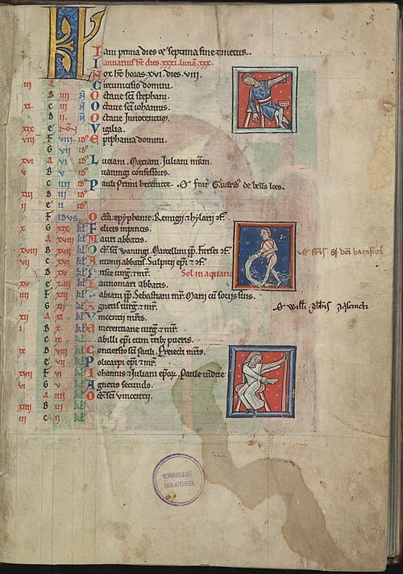
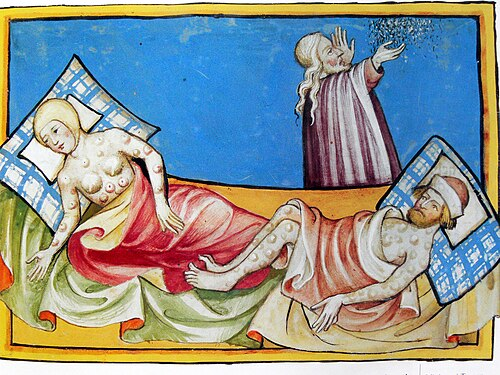

Medieval
Paper 1: Medicine Through Time with the Western Front
Course Textbook
Enquiry: How has medicine changed from c1250 to the modern day?
Contents
|
Lesson 1: KT1.1: What did Medieval people believe caused illness?
|
Page 3
|
|
Lesson 2: KT1.2: How did Medieval people try to prevent and treat disease?
|
Page 7
|
|
Lesson 3: KT1.3: How did people respond to the Black Death?
|
Page 10
|
L1: KT1.1: What did Medieval people believe caused illness?[[SRC_MARKER:L0_Start]]
Learning Objectives
Explain how supernatural and religious factors influenced beliefs about the cause of illness.
Analyse the rational, natural theories of disease used in medieval England.
During the medieval period, life was difficult, and sudden illness was terrifying. Without microscopes or an understanding of germs, people desperately sought ways to make sense of sickness. The explanations they relied on-ranging from God's wrath to the alignment of the stars and the imbalance of bodily fluids-shaped every aspect of medical treatment for centuries. Understanding these beliefs is the key to understanding all of medieval medicine.
Did you know?
- 5th Century BCE: The era when the Ancient Greek doctor Hippocrates first developed the foundational Theory of the Four Humours.
- 4: The exact number of bodily fluids (blood, phlegm, yellow bile, black bile) that medieval doctors believed dictated human health and disease.
- 1345: The year an unusual planetary alignment occurred, which medieval astrologers and physicians blamed for causing the devastating Black Death shortly after.
Do Now Activity
What does the term 'public health' refer to?
Name one ancient civilization that heavily influenced medieval medicine.
Which Greek physician originally created the Theory of the Four Humours?
Which Roman physician developed the Theory of Opposites?
What are the four humours?
What was 'miasma'?
How did the medieval Church explain the cause of disease?
Why did the medieval Church promote the ideas of Galen?
Explain how astrology was used in medieval medicine.
What was the 'urine chart' used for in medieval diagnosis?
Vocabulary Check
Fill in the blanks using the vocabulary words below.
Miasma | Four Humours | Theory of Opposites
In medieval England, medical beliefs were heavily dominated by ancient theories rather than scientific observation. Under the popular theory, a patient's temperature or cold was diagnosed as a bodily imbalance. To treat a cold, a physician might use Galen's to recommend eating hot and dry spices. However, when entire towns fell ill, people often blamed , believing that foul-smelling air from rotting waste in the streets was poisoning their lungs.
[[SRC_MARKER:L0_Source_0]]
Source S1: The Four Humours
A medieval diagram showing the Theory of the Four Humours.
The Dominance of the Church
In the Medieval period, the Catholic Church controlled almost all education, libraries, and universities. Monks were the only people who copied books by hand, meaning the Church decided what people read and what was taught. The Church strongly supported the ideas of Galen because he believed the body had a 'creator', which fit perfectly with Christian teachings.
Because the Church had such immense power, challenging Galen's ideas was seen as challenging the Church itself. Anyone who dared to question the Four Humours or suggest new theories about disease was likely to be punished or even accused of heresy. Furthermore, the Church taught that disease was a punishment from God for sins, meaning many people believed the only way to get better was through prayer and repentance, rather than seeking medical cures. The Church taught that since God sent illness, any recovery was a miracle achieved through prayer; this acted as 'proof of the divine,' providing concrete evidence of God's active existence to the medieval population.
Furthermore, bad smells and decay (miasmatas) were not just viewed as physical hazards; they were deeply associated with sinfulness and spiritual corruption. A clean, sweet-smelling home was seen as a sign of spiritual purity, which is why incense was heavily burned in churches to purify the air.
Supernatural and Religious Explanations
The Catholic Church dominated medieval society and controlled all formal medical education and the copying of books.
The Church taught that illness was a punishment from God for committing sins, or a test of a person's faith. For example, the Bible used leprosy as an illustration of divine punishment, leading sufferers to be socially outcasted and banished to Lazar Houses (specialized leper colonies outside towns). If allowed to travel, lepers had to wear a covering cloak and ring a bell to warn people of their approach. They used this bell to beg for alms (charity), chanting phrases like 'Some good, my gentle master, for God's sake'. Although incorrect, medieval people believed a leper's breath was contagious, showing they did possess basic, primitive ideas about disease transmission.
Astrology was also highly influential. Initially, the Church was highly conservative and frowned upon the use of astrology for diagnosis, viewing it as a dangerous step toward fortune-telling. However, after the devastating arrival of the Black Death in 1348, the Church became much more accepting of astrological explanations. Physicians used Almanacs and star charts to check the alignment of the planets, believing that negative alignments caused disease. For example, an unusual alignment of Mars, Jupiter, and Saturn in 1345 was widely blamed for causing the Black Death. Because people believed God or the stars controlled illness, there was very little motivation to search for other scientific or physical causes, which severely held back medical progress.
[[SRC_MARKER:L0_Task_1_0]]Q1. Identify one reason why the Church promoted Galen's ideas.
Rational Explanations: The Four Humours and Miasma
The Theory of the Four Humours was created by the Ancient Greek physician Hippocrates in the 5th century BCE.
It stated that the body was made of four liquids, each associated with specific seasons, elements, and psychological traits. Blood (Spring, Air, Hot/Wet) was linked to a Sanguine personality (optimistic). Choler or Yellow Bile (Summer, Fire, Hot/Dry) was linked to a Choleric personality (quick-tempered) and appeared in vomit or pus. Black Bile (Autumn, Earth, Cold/Dry) was linked to a Melancholic personality (depression) and appeared in clotted blood or excrement. Phlegm (Winter, Water, Cold/Wet) was linked to a Phlegmatic personality (lethargic, sneezing). Physicians believed illness occurred naturally when these humours became unbalanced.
Miasma was another highly popular rational theory; people believed that breathing in 'bad air' filled with foul-smelling fumes from rotting matter or swamps corrupted the body's humours and caused disease. Medieval physicians rarely used the word 'miasma' itself, instead referring to it in records as 'corruption of the air,' 'pestilential air,' or 'putrefaction of the air.' The Theory of the Four Humours was incredibly significant because it provided a complete, logical system that physicians used to diagnose and treat almost every physical and mental illness in medieval England.
[[SRC_MARKER:L0_Task_2_0]]Q2. Describe the Theory of the Four Humours.
HippocratesKnowledge Check (Q3)
Why did the Church promote the work of the ancient Roman doctor Galen?
- A. Because Galen proved that God sent diseases as a punishment.
- B. Because Galen's theory of a perfectly designed body fit Christian creation theology.
- C. Because Galen was a devout Christian.
- D. Because he was the personal physician to the Pope.
The Continuing Influence of Galen
Galen, an Ancient Roman physician, developed Hippocrates' ideas further by creating the Theory of Opposites (for example, treating an excess of 'cold' phlegm with 'hot' peppers).
The Church fiercely promoted Galen's ideas because he wrote that the body was perfectly designed with a specific purpose, which perfectly fit the Christian belief in a single Creator.
Because the Church controlled the universities, Galen's texts became the absolute foundation of medical training. Medical students relied on a core textbook called the Articella, which included translations of Galen and Hippocrates, alongside the work of the 9th-century Persian doctor Hunayn ibn-Is'haq. Training also heavily emphasized the logical works of the Greek philosopher Aristotle and the Persian physician Avicenna. In medieval universities, 'book learning' and being widely read was considered a far greater sign of a physician's intelligence than actual hands-on clinical experience treating patients. Discovering new ideas through human dissection was strictly discouraged because the Church taught the body needed to be buried whole. When rare dissections of executed criminals did occur, the university physician sat high up in a chair far away from the body, simply reading Galen's texts aloud while an untrained barber-surgeon did the actual cutting. If any internal organ on the table physically contradicted Galen's descriptions, the physician would explain it away by claiming the criminal's body was imperfect or deformed, leaving Galen's authority completely unchallenged. Galen's absolute authority meant that his sometimes incorrect anatomical ideas went unchallenged for over a thousand years, making it almost impossible for new medical discoveries to be made during the Middle Ages.
[[SRC_MARKER:L0_Task_4_0]]Q4. Explain how astrology was used in medieval medicine.
[[SRC_MARKER:L0_Task_4_1]]Q5. Evaluate the significance of the Church in holding back medical progress in the Middle Ages.
Claudius Galen
Medieval Diagnostic Methods
Physicians used two highly significant practical diagnostic methods to determine a patient's illness and internal humoural balance.
The first was Urine Charts. Examining a patient's urine was the primary diagnostic tool. A physician would carefully examine a sample against a chart, checking its color, thickness, smell, and even tasting it to diagnose the illness (for example, white or thin urine was diagnosed as an excess of phlegm). This method was so highly valued that large institutions, such as Norwich Cathedral Priory, employed a full-time physician solely to examine urine.
Physicians also carried a Vademecum, a pocket-sized book of charts that included urine colors and astrological diagrams, to patients' bedsides. A common and crucial drawing inside the Vademecum was the 'Zodiac Man' diagram. This illustrated how different star signs governed different parts of the human body, warning physicians when it was astrologically unsafe to treat or perform surgery on a specific body part.
Pair & Share Activity
Q6. Which factor was the most powerful barrier to medieval medical progress: the absolute authority of the Christian Church, or the logical appeal of the Theory of the Four Humours?
Historian's Corner: The Debate over the Medieval Church's Impact on Medicine
For decades, traditional historians portrayed the medieval Catholic Church as a dogmatic institution that actively and deliberately stifled medical progress by banning dissections and imprisoning independent researchers like Roger Bacon. However, modern revisionist historians argue that the Church was not deliberately preventing progress. They point out that without the Church's libraries, the vital ancient medical texts of Hippocrates and Galen would have been lost entirely. Furthermore, they argue that the level of medieval technology meant that microbes could not be observed anyway, meaning that treatment would remain ineffective regardless of religious dominance, and that the Church was the only institution actively offering organised care to the sick through monastic hospitals.
Q7. 'The Theory of the Four Humours was the main idea about the cause of disease in the Middle Ages'. How far do you agree? Explain your answer. (16 marks) You may use the following in your answer:
• Galen
• the Church
You must also use information of your own.
GCSE Exam Practice
Q8. Explain why there was so little progress in understanding the causes of disease during the Middle Ages. (12 marks)
L2: KT1.2: How did Medieval people try to prevent and treat disease?[[SRC_MARKER:L1_Start]]
Learning Objectives
Explain the connection between medieval beliefs about disease and their approaches to treatment and prevention.
Evaluate the roles, training, and accessibility of different medical healers in medieval society.
In medieval England, a lack of scientific knowledge meant treatments were heavily based on religion, superstition, and the Ancient Greeks. Care was mostly provided at home by women, while the wealthy paid for university-trained physicians. The methods used to treat and prevent sickness directly matched people's beliefs about what caused disease, resulting in a bizarre mix of herbal remedies, prayer, and drastic measures like bloodletting to balance the body.
Did you know?
- 1,100: The approximate number of hospitals operating in England by the year 1500, mostly run by the Catholic Church.
- 7 to 10: The number of years a physician spent training at a university, mostly reading the ancient books of Hippocrates and Galen rather than treating patients.
- 1215: The year a Church decree formally forbade clergymen (many of whom were physicians) from carrying out surgical operations that involved cutting the patient.
Do Now Activity
Which Roman physician developed the Theory of Opposites?
How did the medieval Church explain the cause of disease?
What was 'miasma'?
What was the purpose of 'bleeding' (phlebotomy) in medieval medicine?
What was the role of a medieval apothecary?
How did medieval hospitals differ from modern ones?
What does the term 'public health' refer to?
Name one ancient civilization that heavily influenced medieval medicine.
Under the Theory of Opposites, how would a fever (hot/dry) be treated?
What was 'purging'?
Vocabulary Check
Write a historically accurate sentence connecting two terms from the glossary box below.
Phlebotomy | Regimen Sanitatis | Theriaca
Your Sentence:
[[SRC_MARKER:L1_Source_0]]
Source S1: Medieval Bloodletting

A manuscript illustration of a physician performing bloodletting.
Rational and Supernatural Treatments
Medieval treatments were a mix of physical and supernatural (magical/religious) ideas. However, it is a crucial trap to think of supernatural treatments as 'irrational'. If someone believed their illness was sent by God as a punishment for sin, it was considered a highly logical, rational response to try and cure the soul rather than the physical body. Therefore, patients would use spiritual treatments like fasting, praying, or going on a pilgrimage. Some even whipped themselves (flagellants) to show God they were truly sorry for their sins.
If they believed their illness was caused by an imbalance in the Four Humours, they would use rational treatments. The most common was bloodletting (phlebotomy), where doctors would cut a vein or use leeches to remove 'excess' blood. Purging was also common, involving giving the patient an emetic to make them vomit or a laxative to clear their bowels. While these treatments were logical based on their beliefs, they often made the patient weaker and sicker.
Religious and Supernatural Treatments
Because people believed God caused illness as a punishment for sin, treatments focused heavily on spiritual healing. Patients would use prayer, fasting, or go on a pilgrimage to holy shrines to ask for forgiveness or touch holy relics.
Supernatural methods, although frowned upon by the Catholic Church, included chanting spells, reciting incantations, or carrying lucky amulets to ward off evil spirits. Because treatments focused on curing the soul rather than the physical body, medical intervention remained incredibly basic, meaning the death rate for curable diseases remained very high.
[[SRC_MARKER:L1_Task_1_0]]Q9. Identify one supernatural method used to prevent disease.
Rational Treatments: Balancing the Humours
Based on the Theory of the Four Humours, physicians aimed to rebalance the body using bloodletting (phlebotomy). This involved cutting a vein (venesection), using leeches, or cupping to remove excess blood.
Purging the digestive system was another highly common method. Healers used emetics to cause vomiting, or laxatives and clysters (enemas) to clear the bowels of leftover food.
People also used the Theory of Opposites (created by Galen) to balance humours with specific diets or herbal remedies, such as eating hot peppers to cure a 'cold' illness like an excess of phlegm. These rational treatments were actually highly dangerous; bleeding or purging an already weak patient often worsened their condition, and court records show patients occasionally died from the procedures.
[[SRC_MARKER:L1_Task_2_0]]Q10. Describe the process of bloodletting.
Purifying the Air and Preventing Illness
To prevent breathing in deadly miasma (bad air), people carried pomanders (a locket filled with sweet-smelling herbs like lavender) or lit large fires in the street to purify the corruption.
The wealthy paid for the Regimen Sanitatis, a set of instructions written by a physician detailing how to maintain perfect health through a careful diet, regular exercise, and bathing. Although the reasoning behind it was incorrect, the practical steps taken by local authorities to remove rotting waste and clean the smelly air actually helped improve hygiene in crowded medieval towns.
Knowledge Check (Q11)
What was the main difference between an apothecary and a physician?
- A. Physicians performed surgery, apothecaries diagnosed illness.
- B. Apothecaries mixed herbal remedies based on experience, while physicians diagnosed using astrology and ancient books.
- C. Apothecaries were trained at university, physicians were not.
- D. Physicians were always monks, apothecaries were always women.
[[SRC_MARKER:L1_Task_3_0]]Q12. Explain how the Theory of Opposites was used in treatments.
Medical Professionals: Physicians, Apothecaries, and Surgeons
Physicians trained at university for seven to ten years. They diagnosed illnesses by consulting astrology charts and checking the colour, smell, and taste of a patient's urine (using urine charts). They were very expensive and rarely treated patients themselves.
Apothecaries mixed herbal remedies using books like the Materia Medica. One highly popular remedy they mixed was Theriaca, a complex, spice-based mixture containing up to 70 distinct ingredients (including opium and snake flesh) that was used as a universal antidote. Apothecaries were much cheaper than physicians and were the main source of medicine for ordinary people.
Barber surgeons had no university training but learned through apprenticeships. They performed minor surgeries, pulled teeth, and did the bloodletting. The strict division of medical roles meant that the most highly educated people in the country (physicians) rarely ever touched the patients or carried out the practical treatments themselves.
[[SRC_MARKER:L1_Task_4_0]]Q13. To what extent were medieval treatments dangerous for patients?
Caring for the Sick: Hospitals and the Home
The vast majority of sick people were cared for at home by female family members who mixed herbal remedies and grew healing plants in their gardens.
Hospitals were run by the Church (staffed by monks and nuns). They offered 'hospitality' to travellers and the elderly, focusing on a clean environment, rest, and a good diet.
Infectious and terminal patients were usually rejected from these hospitals because prayer and penance could do nothing for them. Because hospitals focused purely on "care, not cure" and relied on prayer rather than doctors, they offered no real medical advancement or effective treatment for severe diseases.
Pair & Share Activity
Q14. If you were a medieval peasant, who would you trust more to care for your family: an expensive university-trained physician who diagnosed using urine and star charts, or a female family member treating you in the home with herbal remedies?
Historian's Corner: The Debate over the Effectiveness of Medieval Hospitals
Traditional historical accounts often dismissed medieval hospitals as dirty, unhygienic places of death where patients shared beds and received no real medicine. However, modern revisionist historians point out that judged by medieval standards, monastic hospitals actually maintained high standards of cleanliness, as bed linens and clothing were regularly washed by nuns. While they did not perform surgery and excluded infectious patients to prevent the spread of disease, they provided crucial spiritual care, warmth, and nutritious food. For patients not suffering from terminal illnesses, monastic care focusing on 'care, not cure' was highly successful in allowing the body to rest and recover in a comfortable, sanitary environment.
Q15. 'In the years c1250-c1500, the physician was the most important person providing care and treatment.' How far do you agree? Explain your answer. (16 marks + 4 marks for SPaG)
GCSE Exam Practice
Q16. Explain why bleeding and purging were such common treatments in the medieval period (c1250-c1500). (12 marks)
L3: KT1.3: How did people respond to the Black Death?[[SRC_MARKER:L2_Start]]
Learning Objectives
Explain the religious and supernatural responses to the Black Death.
Analyse the rational and governmental methods used to prevent and treat the plague.
In 1348, a devastating pandemic known as the Black Death struck England, rapidly wiping out at least a third of the population. Because medieval people had no scientific understanding of bacteria or germs, they desperately blamed the crisis on God, astrology, and foul air. This catastrophic event reveals the horrifying reality of medieval medicine, highlighting how powerless people were when forced to rely on religion and ancient, flawed theories in the face of a true public health emergency.
Did you know?
- 1348: The exact year the Black Death first arrived in England, spreading rapidly across the country.
- One-third: The estimated proportion of the English population killed by the plague in just over a year.
- Buboes: The dark, painful, pus-filled swellings in the armpit or groin that gave the bubonic plague its name.
Do Now Activity
What was the purpose of 'bleeding' (phlebotomy) in medieval medicine?
What was the role of a medieval apothecary?
How did medieval hospitals differ from modern ones?
In what year did the Black Death arrive in England?
Who were the 'flagellants'?
State one common medieval preventative measure for the Black Death.
Which Roman physician developed the Theory of Opposites?
What was 'miasma'?
What was a 'bubo'?
How did local mayors try to prevent the spread of the Black Death?
Vocabulary Check
Write a clear definition and a historically accurate sentence for the term: Buboes
[[SRC_MARKER:L2_Source_0]]
Source S1: The Black Death

An illustration showing victims of the Black Death covered in buboes.
The Black Death Arrives
The Black Death arrived in England in 1348 and killed roughly one-third of the population. People had no idea that the disease was caused by a bacteria carried by fleas on rats. Instead, they blamed the plague on God's anger, bad air (miasma), and the alignment of the planets.
Because they didn't know the true cause, their attempts to prevent it were completely ineffective. People prayed, marched through the streets whipping themselves, lit fires to drive away bad air, and carried sweet-smelling herbs. The government did try some public health measures, like ordering streets to be cleaned, but since the rats continued to roam freely, the plague spread uncontrollably.
Ideas about the Cause of the Plague
Many people believed the plague was a terrifying punishment from God for their sins, sent to cleanse the world of wickedness.
Astrologers blamed the outbreak on a strange and unusual alignment of the planets Mars, Jupiter, and Saturn that occurred in 1345.
Miasma (bad air) was a very popular rational theory; people believed that foul, poisonous fumes released by distant earthquakes or rotting rubbish in the streets had corrupted the air they breathed. Because they did not understand that the disease was actually caused by bacteria carried by fleas living on black rats, they were entirely unable to fight the true root of the epidemic.
[[SRC_MARKER:L2_Task_1_0]]Q17. Identify the true cause of the Black Death.
Approaches to Treatment
Physicians attempted to rebalance the humours using traditional methods like bloodletting and purging, but this only weakened patients and often made them die faster.
Some surgeons tried lancing (cutting open) the buboes-the dark, painful swellings on the groin and armpits-to let the 'bad blood' and poison escape.
Apothecaries sold herbal remedies, including strong-smelling herbs like aloe and the expensive, spice-based mixture known as Theriaca. The complete failure of these medical treatments proved that the ancient ideas of Galen and Hippocrates were useless against serious epidemic diseases, though people were too terrified to abandon them entirely.
[[SRC_MARKER:L2_Task_2_0]]Q18. Describe two ways people tried to prevent the Black Death.
Attempts to Prevent the Spread (Religious & Natural)
The Catholic Church advised people to pray, fast, and go on a pilgrimage. Groups of Flagellants walked through the streets whipping themselves in public to beg for God's forgiveness.
To avoid breathing in miasma, people carried posies of sweet-smelling flowers to their noses, or lit large fires in the streets to purify the air.
The most effective natural method was simply running away; the Pope's physician, Guy de Chauliac, advised people to "go quickly, go far, and return slowly." Because prevention was mainly focused on spiritual healing or masking bad smells, the disease continued to spread effortlessly through flea bites, crippling the entire country.
[[SRC_MARKER:L2_Task_3_0]]Q19. Explain why the government's response to the Black Death failed.
Local Government Action
Local authorities and King Edward III issued orders to clean the streets of animal dung and rotting waste to eliminate the bad air.
Some towns tried to enforce early quarantine laws, isolating newcomers for 40 days or locking infected families inside their houses. Although local governments attempted to take action, they did not have the power or money to enforce these rules strictly, meaning the plague continued to spread rapidly across the country.
Knowledge Check (Q20)
Why were the government's orders to clean the streets completely ineffective at stopping the Black Death?
- A. Because the peasants refused to obey the King's laws.
- B. Because the disease was actually a punishment from God.
- C. Because they were trying to remove bad smells (miasma), but ignored the rats and fleas that actually spread the disease.
- D. Because the dirt on the streets was actually killing the germs.
[[SRC_MARKER:L2_Task_4_0]]Q21. Evaluate the impact of the Black Death on medieval society.
Pair & Share Activity
Q22. Was the medieval response to the Black Death dominated more by desperate spiritual panic or by logical, rational attempts at disease prevention based on the scientific ideas of the time?
Historian's Corner: The Debate over the Socio-Economic Impact of the Black Death
Historians are deeply divided over the long-term impact of the Black Death on medieval English society. Traditional historians, such as G.M. Trevelyan, argued that the demographic catastrophe was a massive watershed of progress-the crucial turning point that caused severe labor shortages, ended feudalism, and paved the way for the Renaissance and Industrial Revolution. Conversely, modern revisionist historians argue that the Black Death did not suddenly destroy the feudal system overnight. Instead, they suggest it merely accelerated economic trends that were already underway, pointing to the immediate return of the plague every 10 to 20 years which caused prolonged economic depression and stagnation, rather than rapid modernizing progress.
Q23. 'The main reason why medical care and treatment was ineffective during the medieval period was because medical knowledge was based on Galen's ideas.' How far do you agree? Explain your answer. (16 marks) You may use the following in your answer:
• bloodletting
• dissection
You must also use information of your own.
GCSE Exam Practice
Q24. Explain why the Black Death spread so rapidly in Britain in 1348. (12 marks)
Generated: 2026-08-30 08:45:38 UTC | Unit: edexcel_medicine